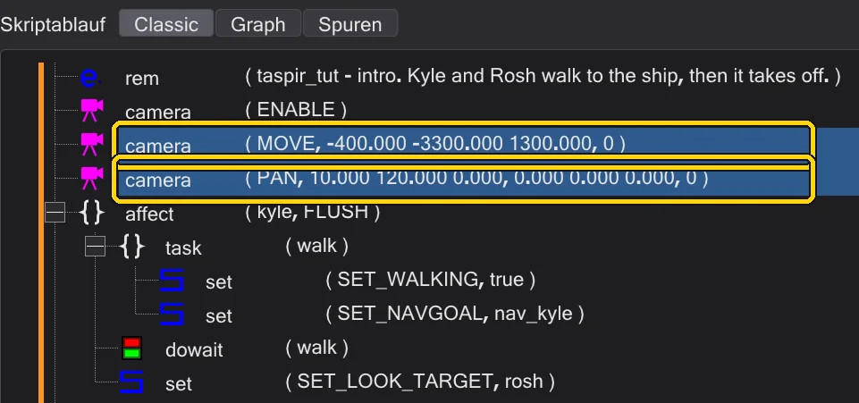
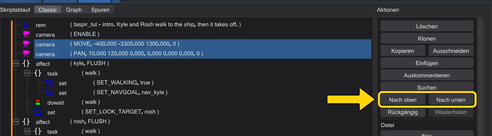
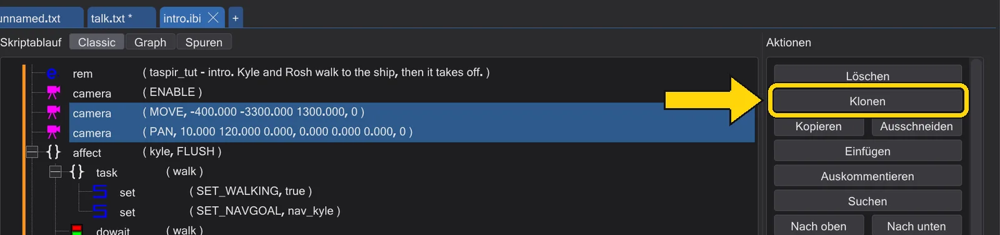
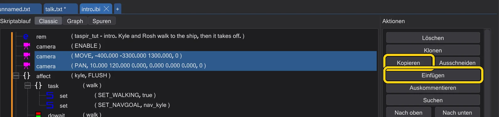
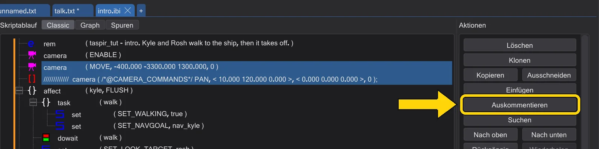
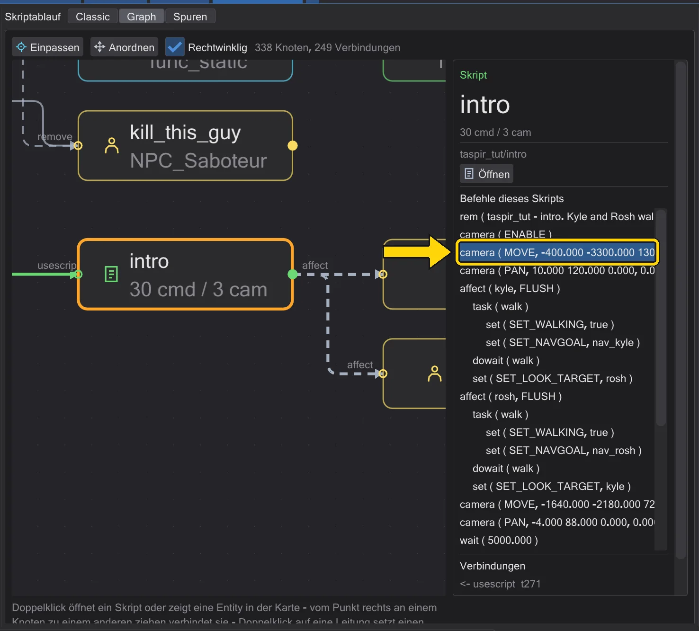
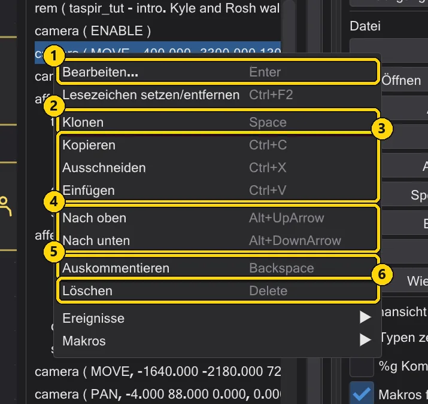
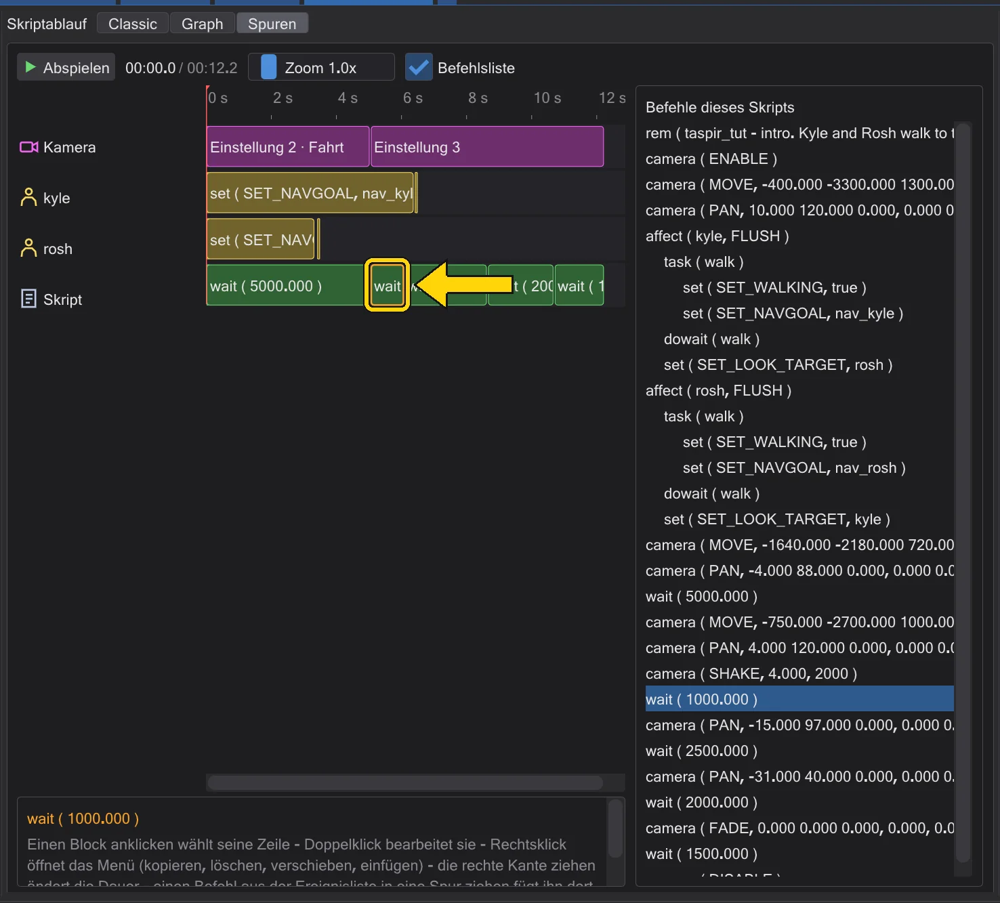
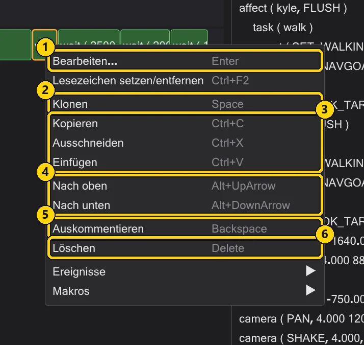
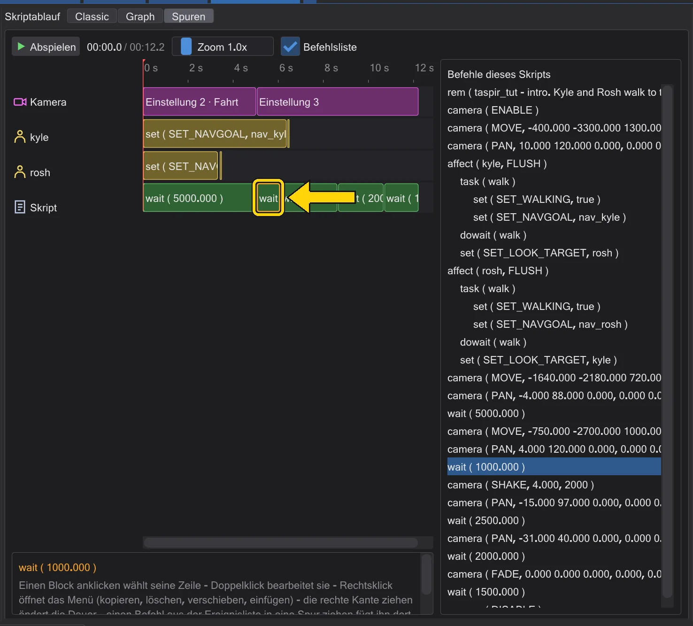

Zeilen verschieben, kopieren und auskommentieren
Ein Skript umbauen: mehrere Zeilen wählen, ziehen, verdoppeln und Zeilen abschalten, ohne sie zu löschen.
Schritte#
- 1
Wählen. Klick auf eine Zeile im Baum. Strg+Klick fügt weitere Zeilen hinzu, Umschalt+Klick wählt alles dazwischen. Jeder Knopf der Aktionsspalte wirkt auf alle gewählten Zeilen zugleich.

Zwei gewählte Zeilen. - 2
Verschieben. Zieh die Auswahl an eine neue Stelle - oder drück Nach oben / Nach unten in der Aktionsspalte (Alt+↑ / Alt+↓), um sie um eine Zeile zu verschieben. Sie bleibt in ihrem Block. Ein Block wandert mit allem, was darin ist.

Nach oben und Nach unten. - 3
Duplizieren. Klonen (Leertaste) fügt direkt darunter eine Kopie der Auswahl ein - der schnellste Weg zu einer zweiten Kameraeinstellung oder einem zweiten Lauf.

Klonen. - 4
Zwischen Skripten kopieren. Kopieren (Strg+C) kopiert die Auswahl. Wechsle zu einem anderen Reiter, wähle eine Zeile und drück Einfügen (Strg+V): die Befehle werden unter dieser Zeile eingefügt.

Kopieren und Einfügen. - 5
Abschalten ohne Löschen. Auskommentieren (Rücktaste) macht die gewählten Zeilen zu Kommentaren: sie bleiben im Skript, aber das Spiel überspringt sie. Drück es noch einmal (oder Strg+Rücktaste), um sie wieder einzuschalten.

Auskommentieren: die beiden Zeilen sind jetzt Kommentare.


- 1
Wählen. Klick auf eine Zeile unter Befehle dieses Skripts. Die Aktionsspalte rechts wirkt auf sie, wie in Classic.

Die gewählte Zeile. - 2
Rechtsklick für den Rest. Das Menü einer Zeile hat alles: Bearbeiten, Klonen, Kopieren, Ausschneiden, Einfügen, Nach oben, Nach unten, Auskommentieren und Löschen.

Das Menü einer Zeile im Graph. Nr. Name Was es macht 1 Bearbeiten... Öffnet den Ereignis-Editor. 2 Klonen Eine Kopie direkt darunter. 3 Kopieren / Ausschneiden / Einfügen Über die Zwischenablage - auch in ein anderes Skript. 4 Nach oben / Nach unten Eine Zeile nach oben oder unten, innerhalb ihres Blocks. 5 Auskommentieren (REM) Schaltet die Zeile aus (Kommentar) oder wieder ein. 6 Löschen Entfernt die Zeile.


- 1
Wählen. Klick auf einen Block in der Zeitleiste - oder auf eine Zeile der Befehlsliste.

Der gewählte Block. - 2
Rechtsklick für den Rest. Das Menü eines Blocks hat Bearbeiten, Klonen, Kopieren, Ausschneiden, Einfügen, Nach oben, Nach unten, Auskommentieren und Löschen.

Das Menü eines Blocks in Spuren. Nr. Name Was es macht 1 Bearbeiten... Öffnet den Ereignis-Editor. 2 Klonen Eine Kopie direkt dahinter - auf der Zeitleiste folgt sie dem ersten. 3 Kopieren / Ausschneiden / Einfügen Über die Zwischenablage. 4 Nach oben / Nach unten Eine Zeile nach oben oder unten im Skript - das ändert die Reihenfolge in der Zeit. 5 Auskommentieren (REM) Schaltet den Befehl aus oder ein. 6 Löschen Entfernt sie. - 3
Verschieben ändert die Zeit. Verschiebst du ein
waitnach oben oder unten, verschiebt sich alles danach - sieh zu, wie die Blöcke wandern.
Nach „Nach oben“: Die Blöcke danach beginnen früher.


Gut zu wissen#
- Löschen (Entf) entfernt Zeilen endgültig - aber Strg+Z holt sie zurück.